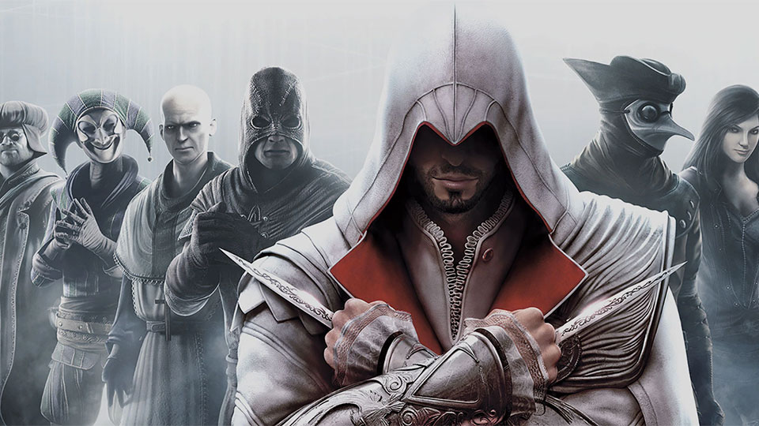
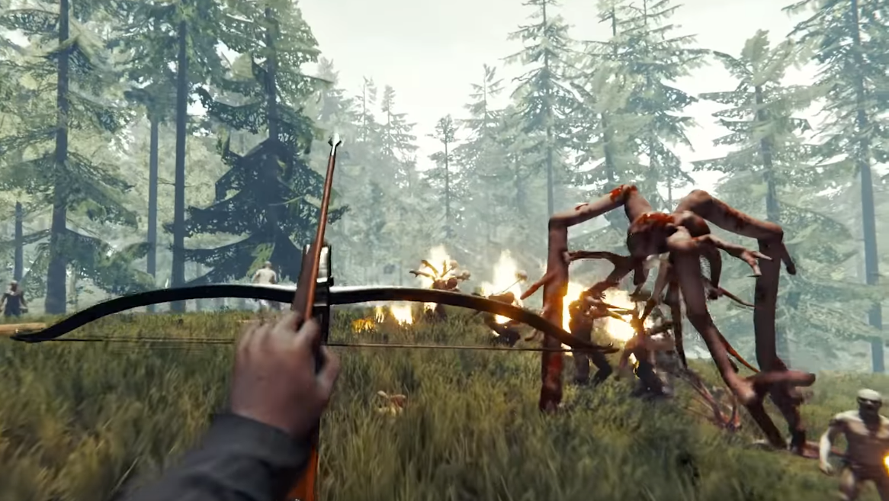

Дарко
Петрушевски
Видео игрите ми се омилени. Најмногу сакам да играм игрици кои од мене бараат брзина и вештина во справување со нови и ненадејни ситуации. Ги сакам видео игрите кои се играат во групи при што се воспоставуваат нови пријателства и се разменуваат нови искуства со членовите на групите. Мислам дека игрите во група ја подобруваат и способноста за комуникација со нови и непознати луѓе и со тоа се избегнува можноста да бидеме изолирани и оставени само на друштвото од комјутерот и ликовите од видео игрите.
Assassin's Creed
Дефинитивно моја најомилена серија од видео-игри е "Assassin's Creed", каде најомилена игра од таа серија ми е "Assassin's Creed:Brotherhood". Оваа серија следи на многу стар конфликт помеѓу две тајни организации наречени: Асасини и Темплари. Главната приказна се револвира околу уред наречен Анимус, која дозволува на корисниците да ги исживеат мемориите на нивнити предци преку генетичка меморија.
Мојот најомилен карактер од оваа серија е Ezio Auditore da Firenze. Тој е мастер асасин и ментор на многу други асасини во периодот на Ренесансата. Бара одмазда за убиството на неговото семејство и открива огромна завера, што на крајот станува легендарна фигура во Асасин братсвото.
Subnautica
Subnautica е игра која ми остави трауми за океанот. Претставува сурвајвал игра каде се наоѓате на вонземска планета каде што се наоѓаат само 2 мали острови, а се друго е под вода.

По несреќно слетување на океанска планета наречена 4546B, вие имате задача да ја истражите цела планета која е исполнета со разновиден морски свет, антички урнатини и предавнички длабочини. Со лимитирани ресурси, мора да барате материјали, да направите секакви алатки и да конструирате база која ќе ви помогне со вашето преживување на планетата. Целта на играта е да најдете лек кој ќе ви помогне со болеста што се заразувате на планетата и да се вратете на нашата планета.
The Forest
The Forest е игра која ми остави многу добар впечаток. Претставува сурвајвал и хорор игра каде се наоѓате на остров наречен "Peninsula". Како стигате на овој остров? Главниот лик патува со својот син во авион. Сред лет авионот почнува да се тресе и по неколку секунди се откачува предниот дел од авионот. Поради падот се онесвестувате и само по некое време ги отварате очите гледајќи како еден црвено офарбан човек ви го зема вашиот син.
Ваша задача е да преживеете и да го најдете вашиот син на островот. Треба да ги истражите шумите, да влагате во пештери за да ги откриете тајните на овој остров. Но, еден од главните работи на играта е што не сте сами на островот...